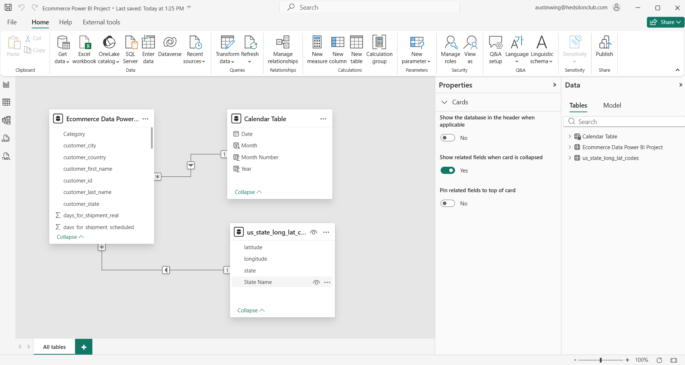

E-Commerce Sales Performance Dashboard
Contract BI Project | Profitability & Trend Analysis
Project Background
The ecommerce leadership team came to me with sales transaction data and asked for a single Power BI dashboard that would standardize performance reporting. Their challenge wasn’t a lack of data—it was the lack of a repeatable answer system.
They needed a system to answer:
- “Are we up or down vs last year?”
- “Is the issue sales volume, profitability, or both?”
- “Which customer segment and product categories are driving the change?”
Data & Modeling Strategy
The dataset contained 115,746 rows across 39 columns, including Time, Performance, Customer, Product, and Geography fields. A key requirement was a dedicated Calendar/Date dimension to support consistent YTD vs PYTD comparisons.

Snapshot of the raw transaction data.
Design Strategy: Metric System First
I built a reusable DAX KPI layer so that “YTD,” “PYTD,” and “YoY” mean the same thing everywhere—regardless of segment, category, or region filters. This prevents common BI failure modes like conflicting definitions or YoY measures breaking under slicers.
The Star Schema used to connect Transactions to the Calendar and Dimension tables.
DAX Logic & Measures
Below are the core DAX measures developed to drive the KPI logic.
A) Sales Metrics (YTD / PYTD / YoY)
B) Profit Metrics
C) Profit Margin Metrics
Business Questions Answered
The dashboard was built to answer specific questions at different levels of the organization:
- Executive Performance: Are YTD Sales, Profit, and Margins improving or deteriorating vs PYTD?
- Segment Accountability: Which segment (Consumer / Corporate / Home Office) is driving overall results?
- Category Drivers: Is a segment’s performance explained by one category (concentration risk) or broad-based change?
- Product Concentration: Which products contribute most to YTD Sales (Top 5)? Which contribute least?
- Geographic Mix: Which regions contribute the largest share of YTD Sales, and does the mix shift by segment?